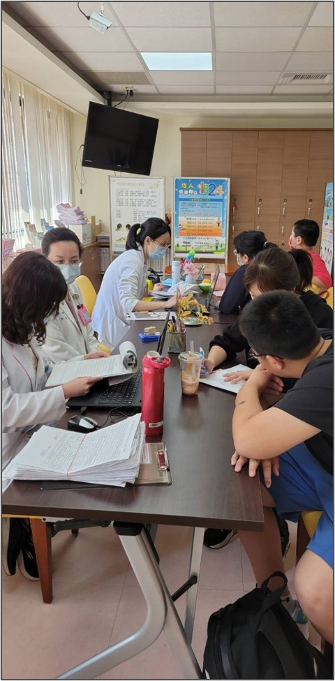

09
兒童成長門診
Pediatric Growth Clinic
身高的焦慮不必獨自承擔。婦幼以分級照護，讓每個家庭找到最適切的下一步。

24
09
三層級分級照護 把專科留給最需要的孩子
Tier 1 初篩 ・ Tier 2 會診 ・ Tier 3 治療
Three-Tier Growth Care
少子化的年代，每個家庭都更在意孩子的身高與發育。本院兒童內分泌專科門診長年因應大量需求，需要更彈性的分流機制；2025 年全院共開立 2,030 筆骨齡 X 光、76 名兒童接受生長激素治療，反映出家長對成長照護的高度關切。
我們於 2026 年新設「兒童成長門診」，由一般小兒科醫師擔任第一線守門人，把專科醫師的時間留給真正需要病理性介入的孩子。
A three-tier model lets generalists screen confidently and reserves specialists for the children who truly need them.
Tier 1
初篩與追蹤
一般小兒科醫師執行生長曲線監測、紅旗警訊篩檢、青春期分期、營養睡眠運動處方
Tier 2
內分泌會診
兒童內分泌專科醫師雲端會診，骨齡判讀與進階檢驗安排
Tier 3
專科治療
生長激素激發測驗、性早熟治療、健保專案審查申請
對標醫學中心成長門診陣容，建立婦幼差異化服務優勢，並完整累積健保 hGH 送審所需的長期追蹤數據。
「每一公分的成長，都值得被慎重對待──把專科留給真正需要的孩子，是分級照護的初心。」
25